Online+
Web3 соцсеть с крипто-вознаграждением за контент. Редизайн кошелька: покупка и обмен токенов
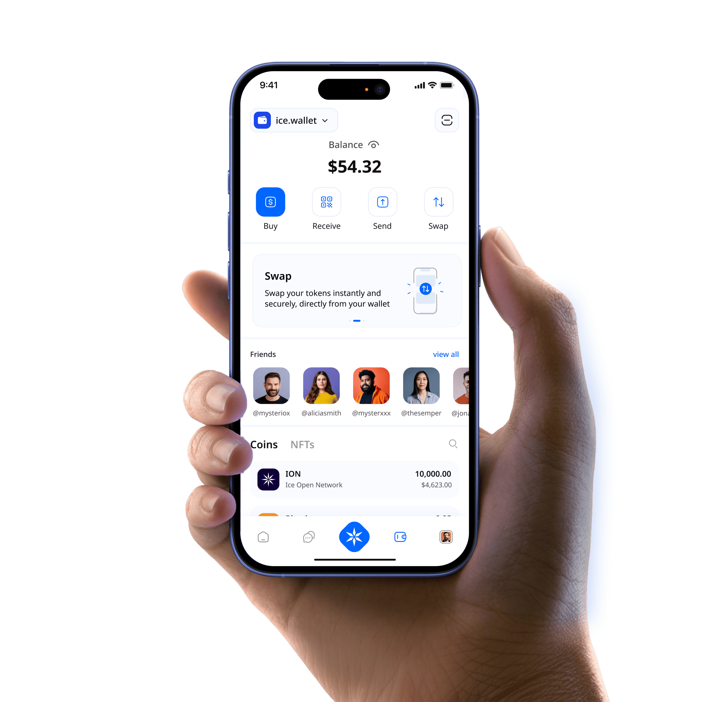
Заработок на контенте без посредников
Пользователи
Осознанные пользователи, которые хотят не просто общаться в соцсети, а получать реальную выгоду от своего времени и контента.
Что даёт продукт
Каждый пост, лайк и комментарий приносит внутреннюю валюту, которая конвертируется. Нейросеть анализирует вовлечённость и помогает продвигать лучшие посты.
Ценность для бизнеса
Активные пользователи остаются дольше и привлекают новых. Крипто-механика повышает лояльность и ежедневную активность, увеличивая комиссионный доход.
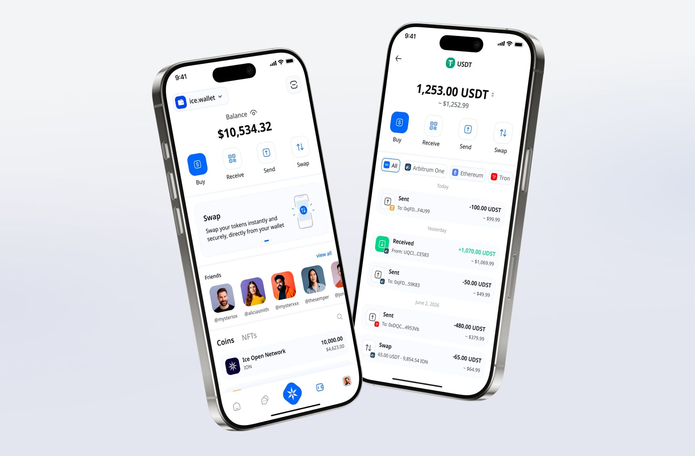
Фокус — кошелёк
Этот кейс — фрагмент масштабного проекта, над которым я работал два с половиной года. Здесь я фокусируюсь на одном из ключевых разделов приложения — кошельке, а именно на его обновлении. Добавили новые функции: покупку и обмен токенов.
Бизнес-цель
Мы предполагаем, что улучшение UX кошелька повысит транзакционную активность, что в перспективе приведёт к росту доходов. Ключевая метрика успеха — рост доли пользователей, завершающих транзакцию.
Увеличить количество завершённых транзакций
Сделать процесс покупки и обмена токенов максимально простым и понятным, чтобы больше пользователей завершали транзакции.
Вынести ключевые инструменты на первый план
Swap, Buy, Send, Receive — чтобы пользователь мог начать операцию в один клик.
Было → стало
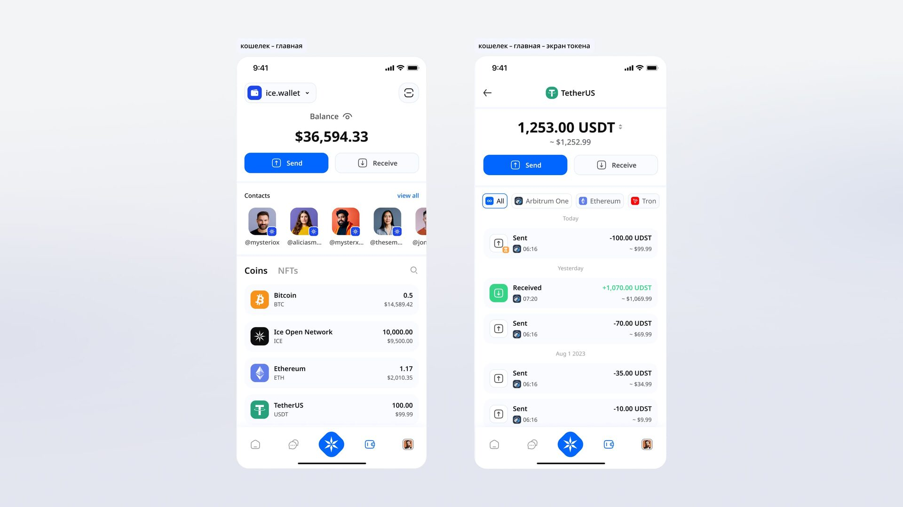
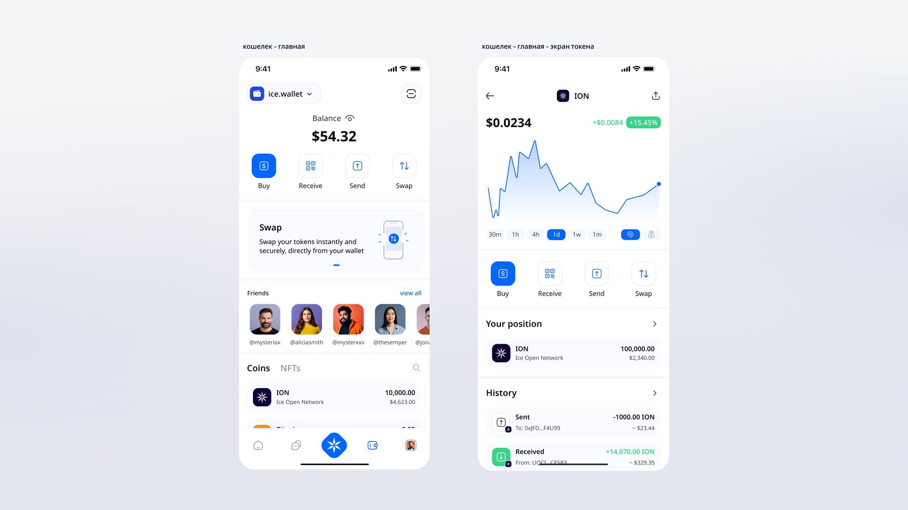
Потяните, чтобы сравнить
Всё под рукой
Упростить навигацию, чтобы все инструменты для обмена и покупки токенов были под рукой.
Экономия времени
За счёт отображения ключевых функций на одном экране.
Удобство взаимодействия
Минимальное количество кликов до ключевого действия.
Согласовали с продактом
- Цель
- Рост комиссионного дохода на 20% за счёт более частых и быстрых обменов.
- Продуктовая задача
- Упростить для пользователей навигацию к фичам Swap и Buy, чтобы снизить количество брошенных сессий и увеличить комиссионный доход.
- Добавить
- Слайдер с баннерами, чтобы увеличить кросс-использование функций и дополнительно уведомлять.
Анализ текущего экрана
Проведя анализ текущего экрана, выявили несколько важных параметров, которые необходимо учесть при проектировании.
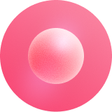
Критично
- Кнопки Swap и Buy спрятаны в нижнем боттом-шите. Лишний шаг для пользователя, падение конверсии и потеря дохода
Важно
- Список токенов должен быть на 1-м экране, без скролла, чтобы принимать быстрые финансовые решения
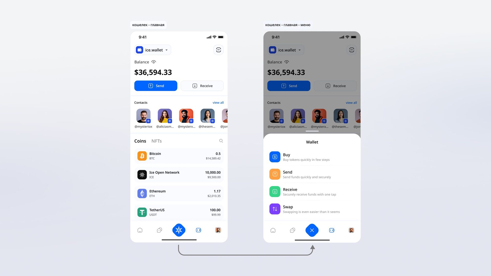
Данные и фидбэк
- Изучаем полученные инсайты от группы бета-тестировщиков.
- Формулируем весь фидбэк в гипотезы, анализируем конкурентов.
- Используем Jobs To Be Done как фокус на прогрессе, которого хочет достичь пользователь.
Анализ качественных данных
доля пользователей, совершивших транзакцию за сессию
кликают по кнопке Swap (от всех пользователей)
кликают по кнопке Buy (от всех пользователей)
Формулировка проблемы
Сложная навигация заставляет пользователей тратить время на поиск Swap и Buy. Конверсия составляет всего 12%, а 88% сессий заканчиваются без единого действия — пользователи уходят, так и не совершив транзакцию.
сессий заканчиваются без транзакции
Фидбэк от бета-тестировщиков
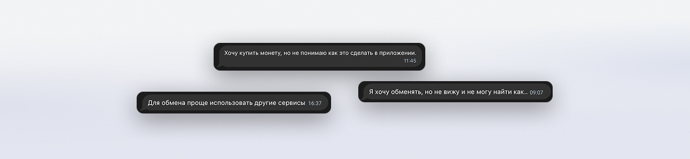
Анализ конкурентов
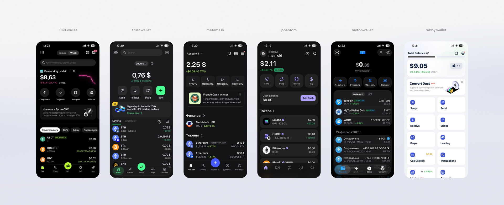
Фокус на прогрессе пользователя
я открываю кошелёк
сразу видеть быстрые кнопки действий (Купить, Обменять, Получить и Отправить)
быстро выполнить транзакцию, не терять время на поиски функции и не пропустить выгодную цену
Идеи и варианты решений
Генерирую идеи и проектирую возможные пути решения задачи.
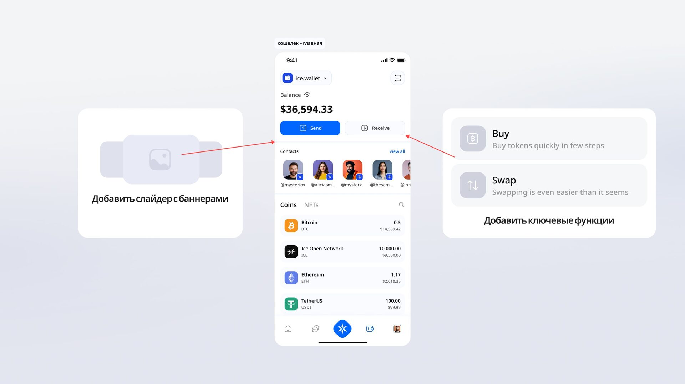
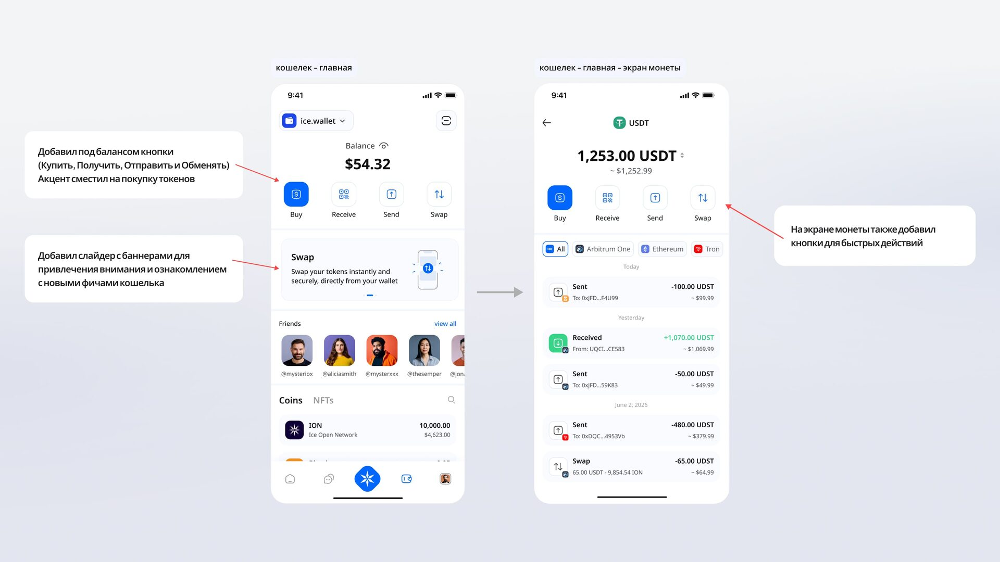
Фидбэк от продакта и CEO
По результатам ревью, чтобы повысить вовлечённость пользователей, решили добавить:
График монеты
Переключение интервала, цена и капитализация.
Эффект: снижение оттока из кошелька, рост доверия и импульсивных обменов на локальных движениях цены.Блок «Моя позиция»
Информация о количестве монет.
Эффект: сокращение времени на оценку своих средств, повышение частоты Swap/Buy за сессию.История операций
Все транзакции в одном месте.
Эффект: снижение когнитивной нагрузки, повторение успешных действий, рост доверия через прозрачность.Поделиться монетой
Иконка для шаринга сведений о монете.
Эффект: вирусный рост и бесплатное привлечение новых пользователей через социальное доказательство.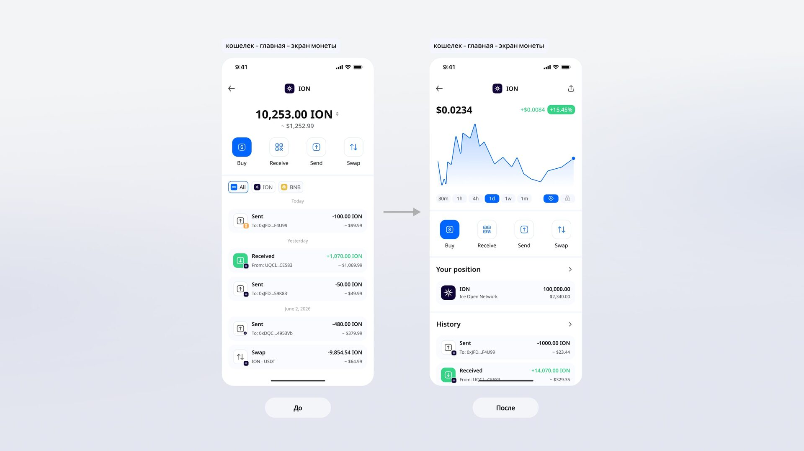
Пользовательское тестирование
Предоставляем новую сборку группе бета-тестировщиков для проверки и получения фидбэка.
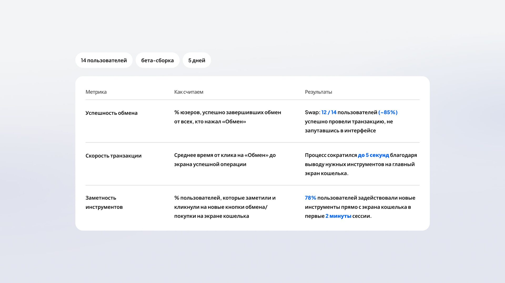
Итоги тестирования
Успешность обмена
пользователей завершили транзакции — новый сценарий понятен.
Скорость
среднее время обмена. Вынос ключевых инструментов на главный экран оправдал себя.
Заметность
пользователей заметили и кликнули на новые кнопки в первые минуты сессии.
После обновления кошелька пользователи быстрее находят инструменты и успешнее совершают транзакции.
Интеграция с MoonPay
Покупка токенов реализована через провайдера MoonPay. Я разработал нативный экран с выбором суммы и валюты, а все последующие шаги — подтверждение, верификация и оплата — происходят на стороне MoonPay. Задача — бесшовная интеграция и адаптация интерфейса провайдера под общую стилистику продукта.
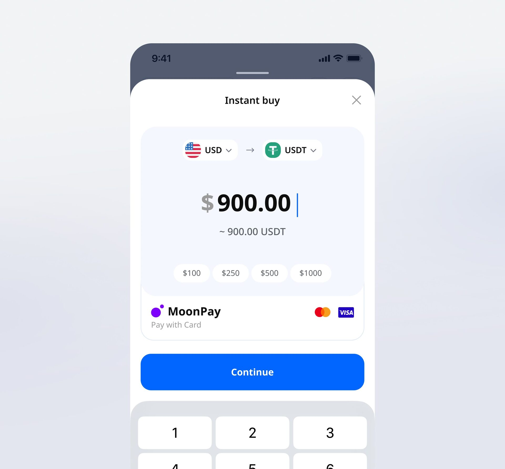
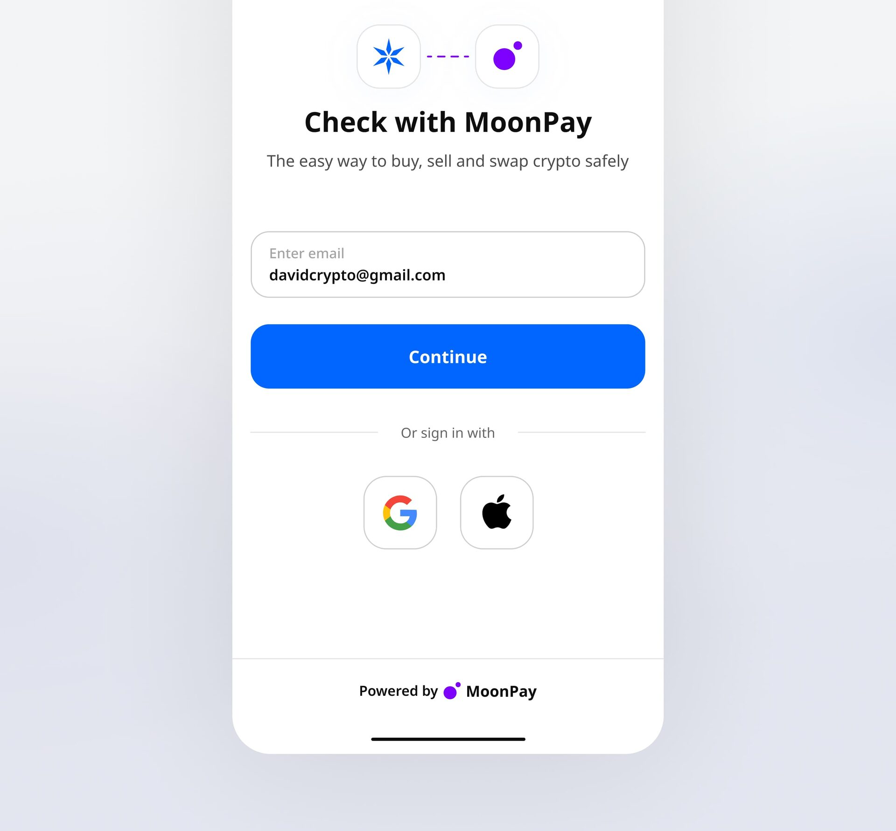
Статус в реальном времени
После оплаты через MoonPay транзакцию можно отслеживать в истории. Доступен детальный статус с обновлением в реальном времени — от подтверждения сети до зачисления токенов на баланс. Всё в одном месте.
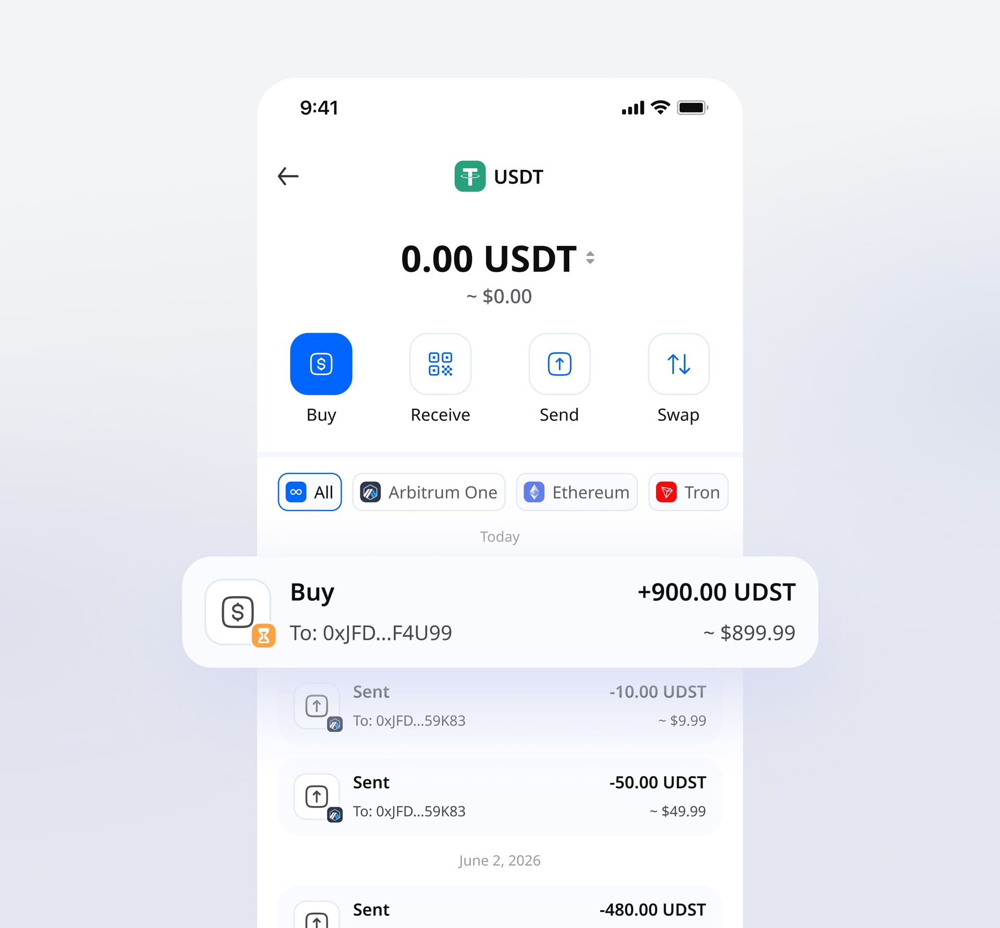
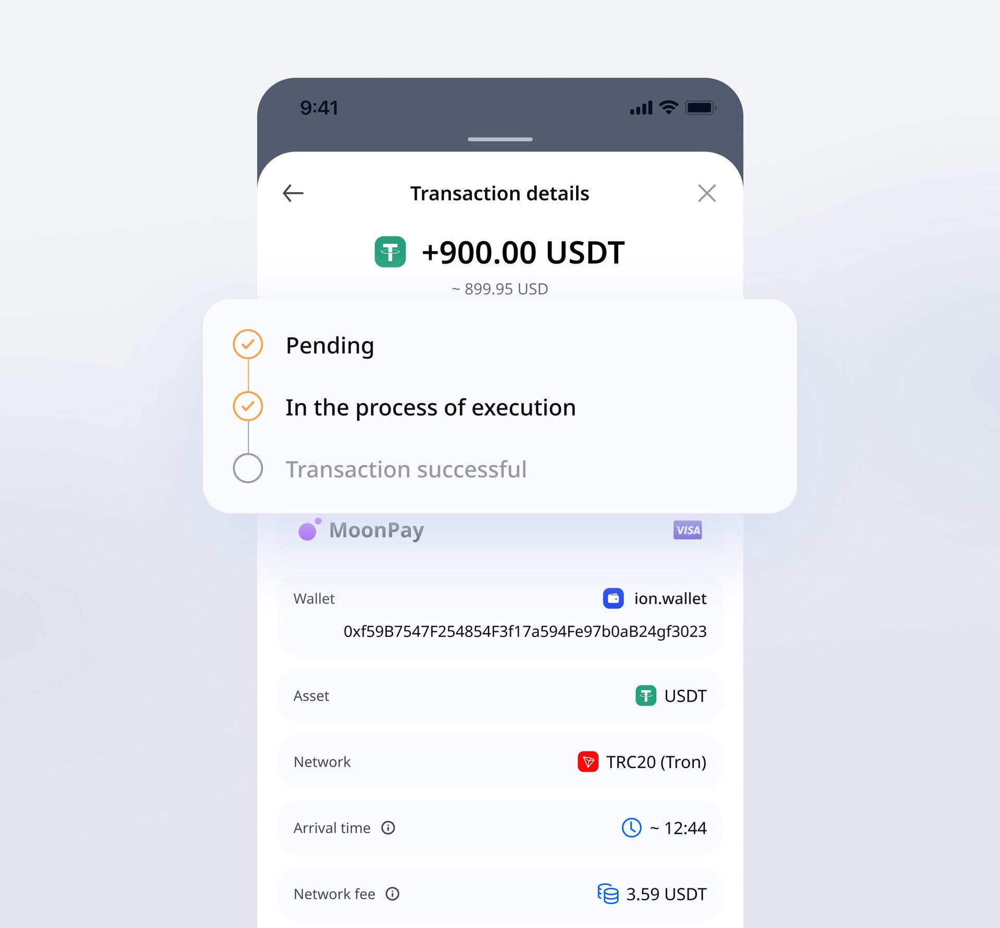
Знакомые паттерны
Мы опирались на лучшие практики и знакомые пользователям решения из популярных крипто-кошельков. Это сделало интерфейс предсказуемым, а пользователи чувствуют себя увереннее при совершении операций.
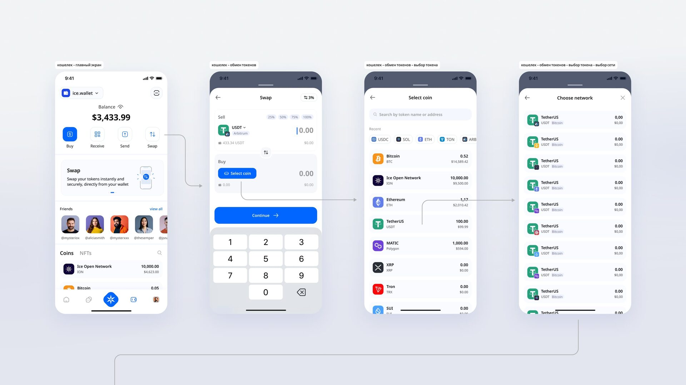
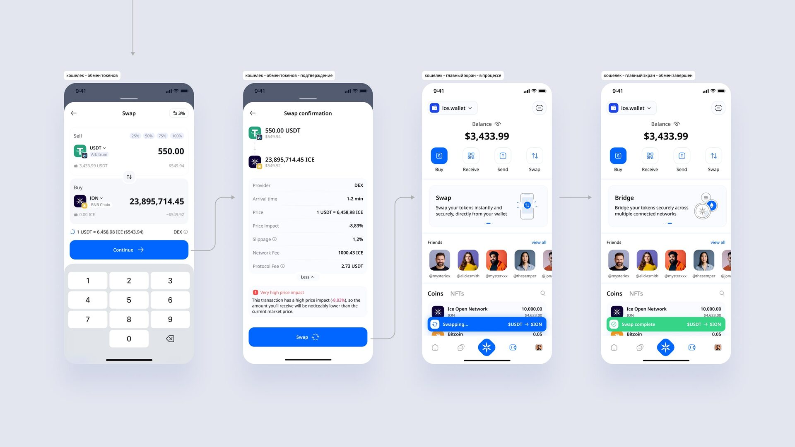
Смежные экраны и состояния
Я проработал не только основной сценарий свопа, но и смежные экраны: варианты проскальзывания, карточку транзакции в истории и состояние функции, которая пока недоступна пользователю. Все элементы используют общие компоненты дизайн-системы.
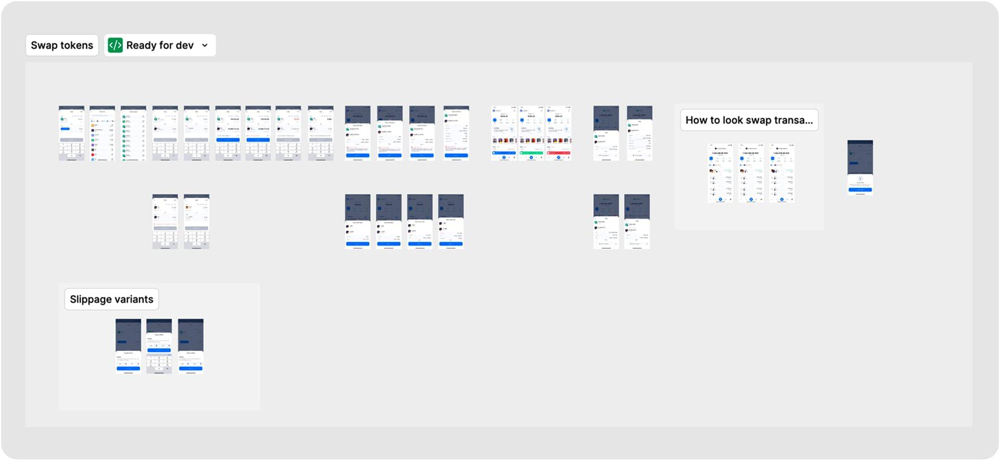
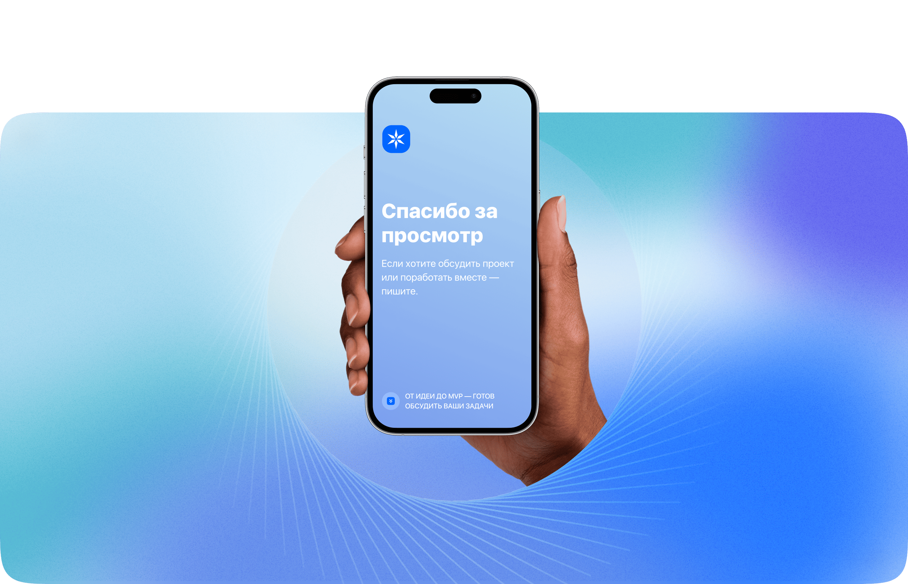